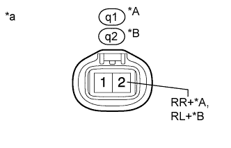

DTC C1407 Open or Short in Rear Speed Sensor RH Circuit |
DTC C1408 Open or Short in Rear Speed Sensor LH Circuit |
| DTC Code | DTC Detection Condition | Trouble Area |
| C1407 C1408 | Either condition is met:
|
|
| 1.CHECK HARNESS AND CONNECTOR (MOMENTARY INTERRUPTION) |
Using the intelligent tester, check for any momentary interruption in the wire harness and connector corresponding to the DTC (Click here).
| Tester Display | Measurement Item/Range | Normal Condition | Diagnostic Note |
| RR Speed Open | Rear speed sensor RH open detection/ Error or Normal | Normal | - |
| RL Speed Open | Rear speed sensor LH open detection/ Error or Normal | Normal | - |
|
| ||||
| OK | |
| 2.READ VALUE USING INTELLIGENT TESTER (REAR SPEED SENSOR) |
Turn the engine switch off.
Connect the intelligent tester to the DLC3.
Start the engine.
Turn the intelligent tester on.
Enter the following menus: Chassis / ABS/VSC/TRC / Data List.
| Tester Display | Measurement Item/Range | Normal Condition | Diagnostic Note |
| RR Wheel Speed | Rear speed sensor RH reading/ Min.: 0 km/h (0 mph), Max.: 326 km/h (202 mph) | Actual wheel speed | No large fluctuations when driving at a constant speed. |
| RL Wheel Speed | Rear speed sensor LH reading/ Min.: 0 km/h (0 mph), Max.: 326 km/h (202 mph) | Actual wheel speed | No large fluctuations when driving at a constant speed. |
Check that there is no difference between the speed value output from the speed sensor displayed on the intelligent tester and the speed value displayed on the speedometer when driving the vehicle.
|
| ||||
| OK | |
| 3.RECONFIRM DTC |
Turn the engine switch off.
Clear the DTC (Click here).
Start the engine.
Drive the vehicle at a speed of 40 km/h (25 mph) or more for at least 60 seconds.
Check if the same DTC is output (Click here).
| Result | Proceed to |
| DTC is not output | A |
| DTC is output | B |
|
| ||||
| A | ||
| ||
| 4.INSPECT SKID CONTROL SENSOR WIRE |
| *A | for RH | *B | for LH |
| *1 | Skid Control Sensor Wire | - | - |
Remove the skid control sensor wire (Click here).
Measure the resistance according to the value(s) in the table below.
| Tester Connection | Condition | Specified Condition |
| Sq1-4 - q1-2 (RR+) | Always | Below 1 Ω |
| Sq1-3 - q1-1 (RR-) | Always | Below 1 Ω |
| Sq1-4 - Sq1-3 | Always | 10 kΩ or higher |
| Sq1-4 - Sq1-1 | Always | 10 kΩ or higher |
| Sq1-4 - Sq1-2 | Always | 10 kΩ or higher |
| Tester Connection | Condition | Specified Condition |
| Sq1-2 - q2-2 (RL+) | Always | Below 1 Ω |
| Sq1-1 - q2-1 (RL-) | Always | Below 1 Ω |
| Sq1-2 - Sq1-1 | Always | 10 kΩ or higher |
| Sq1-2 - Sq1-3 | Always | 10 kΩ or higher |
| Sq1-2 - Sq1-4 | Always | 10 kΩ or higher |
|
| ||||
| OK | |
| 5.CHECK HARNESS AND CONNECTOR (SKID CONTROL ECU - REAR SPEED SENSOR) |
Install the skid control sensor wire.
Disconnect the A7 skid control ECU connector.
Disconnect the q1 and/or q2 speed sensor connector.
Measure the resistance according to the value(s) in the table below.
| Tester Connection | Condition | Specified Condition |
| A7-5 (RR+) - q1-2 (RR+) | Always | Below 1 Ω |
| A7-5 (RR+) - Body ground | Always | 10 kΩ or higher |
| A7-19 (RR-) - q1-1 (RR-) | Always | Below 1 Ω |
| A7-19 (RR-) - Body ground | Always | 10 kΩ or higher |
| Tester Connection | Condition | Specified Condition |
| A7-20 (RL+) - q2-2 (RL+) | Always | Below 1 Ω |
| A7-20 (RL+) - Body ground | Always | 10 kΩ or higher |
| A7-6 (RL-) - q2-1 (RL-) | Always | Below 1 Ω |
| A7-6 (RL-) - Body ground | Always | 10 kΩ or higher |
|
| ||||
| OK | |
| 6.CHECK TERMINAL VOLTAGE (RR+, RL+) |
Disconnect the q1 and/or q2 speed sensor connector.
Connect the A7 skid control ECU connector.
|  |
Measure the voltage according to the value(s) in the table below.
| Tester Connection | Switch Condition | Specified Condition |
| q1-2 (RR+) - Body ground | Engine switch on (IG) | 11 to 14 V |
| Tester Connection | Switch Condition | Specified Condition |
| q2-2 (RL+) - Body ground | Engine switch on (IG) | 11 to 14 V |
| *A | for RH |
| *B | for LH |
| *a | Front view of wire harness connector (to Rear Speed Sensor) |
|
| ||||
| OK | ||
| ||